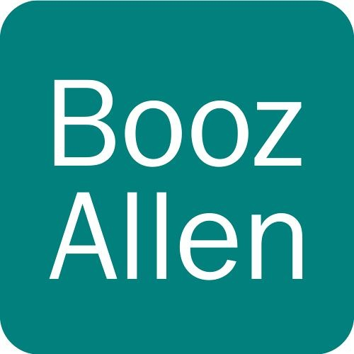

Portfolio
|
Hi, I'm Peter! I'm a student at Georgetown University concentrating in Computer Science, Cybersecurity, and International Relations, and minoring in Korean. I am a runner, I'm a big Utah Jazz fan, I love programming, and I enjoy studying foreign languages. Here is my resume. |

|
Things I've worked on
Booz Allen HamiltonI helped build a testing framework for an automated binary analysis and vulnerability discovery tool during a summer internship at Booz Allen in 2018. |
 |
Liberty in North Korea: All For OneAll For One is a peer-to-peer fundraising campaign platform that I helped develop for Liberty in North Korea during 2016. To date, it has helped raise over $20,000 to rescue North Korean refugees. |
|
Lucidchart and LucidpressLucid makes online collaborative tools like Lucidchart, a diagamming tool, and Lucidpress, a publishing tool. I wrote hundreds of automated UI-based tests for both Lucidchart and Lucidpress while working at Lucid Software during the summer of 2015. |
I have also written a raytracer in C++, a little game engine on top of MonoGame in C#, and games in Lua and Javascript. Check out my Github for more!